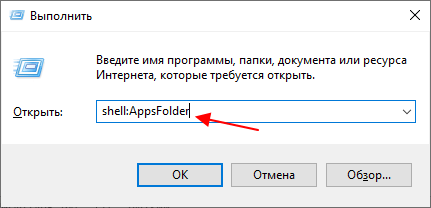
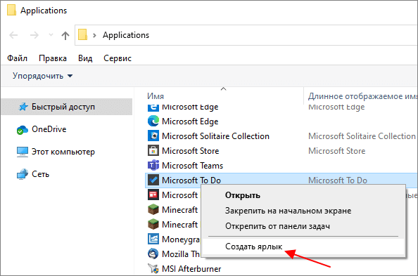
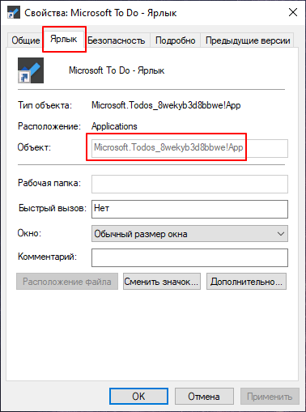
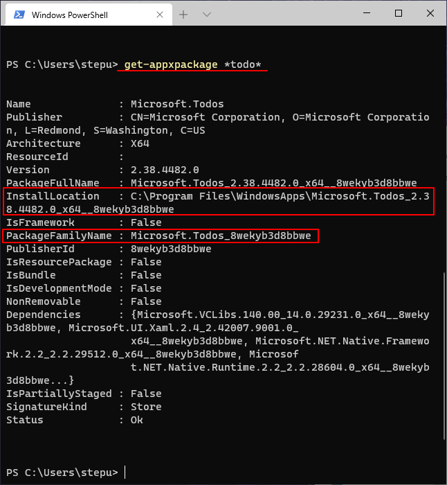
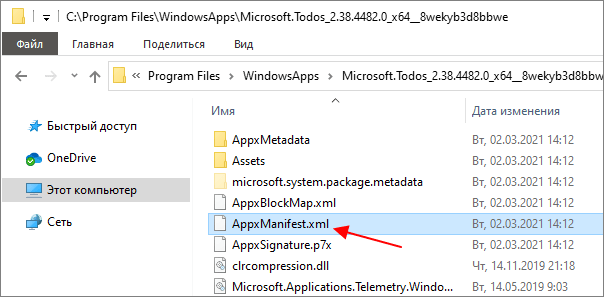
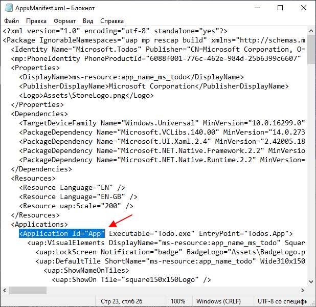

Как запустить универсальное приложение (UWP) из Microsoft Store через командную строку
Универсальные приложения или UWP – это один из типов программ для операционной системы Windows 10. Особенностью UWP программ является то, что они устанавливаются из магазина Microsoft Store и могут работать на разных устройствах. Например, такие программы можно запустить на компьютере, телефоне, планшете, Xbox, Surface Hub, HoloLens и других устройствах.
Для запуска таких универсальных приложений можно использовать поиск в меню «Пуск», иконку на панели задач или ярлык на рабочем столе. Но, если вы хотите автоматизировать запуск такого приложения, то можете столкнуться с трудностями, так как запуск при помощи exe-файла не сработает.
В данной небольшой статье мы расскажем, как запустить универсальное приложение из Microsoft Store с помощью командной строки.
Итак, для запуска универсальных приложения через командную строку нужно использовать следующую команду:
explorer.exe shell:appsFolder\PackageFamilyName!ID
Чтобы эта команда заработала нужно узнать «PackageFamilyName» и «ID» для вашего приложения и подставить их в команду.
Для этого выполняем «shell:AppsFolder».

В открывшемся окне находим приложение, которое нужно запустить через командную строку, и создаём для него ярлык на рабочем столе.

Дальше открываем свойства созданного ярлыка и смотрим в строку «Объект» на вкладке «Ярлык».

Здесь будет указана уже готовая строка с «PackageFamilyName» и «ID», которые разделены восклицательным знаком. Все что нужно сделать, это подставить данную строку в команду выше, чтобы она выглядела вот так:
explorer.exe shell:appsFolder\Microsoft.Todos_8wekyb3d8bbwe!App
К сожалению, скопировать эту строку из свойств ярлыка нельзя, поэтому ее придется или набирать вручную.
Если очень лень набирать, то эту информацию можно получить с помощью команды «get-appxpackage» в PowerShell. Для этого выполняем следующую команду:
get-appxpackage *name*
Где «name» — это название вашего приложения.

В выдаче данной команды мы получим «PackageFamilyName».
Чтобы узнать еще и «ID» нужно перейти в папку, где установлена данная программа (путь «InstallLocation»), и открыть там файл «AppxManifest.xml».

В этом файле ищем значение «Application Id».

Это и есть «ID», которое нам нужно для команды.
Посмотрите также:
АВТОР АЛЕКСАНДР СТЕПУШИН
Создатель сайта comp-security.net, автор более 2000 статей о ремонте компьютеров, работе с программами, настройке операционных систем.
ОСТАЛИСЬ ВОПРОСЫ?
Задайте вопрос в комментариях под статьей или на странице «Задать вопрос» и вы обязательно получите ответ.
ИЛЬЯ 07.02.2022
Для запуска можно сделать проще.
АЛЕКСАНДР СТЕПУШИН 07.02.2022
Спасибо. Можно даже не включать показ скрытых папок и не менять владельца папки WindowsApps.
Но, этот способ работает не всегда. Некоторые приложения не запускаются, если просто открыть exe-файл. Например, приложение Microsoft Todo работает, а Microsoft YourPhone — нет.
А способ из статьи срабатывает в любом случае.
Имя
Comp-Security.net Copyright © 2022.